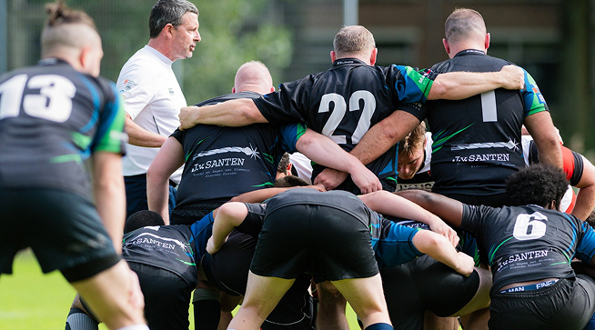
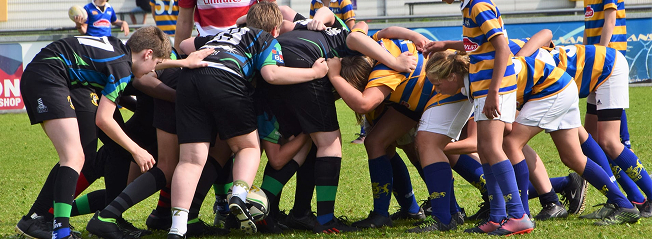
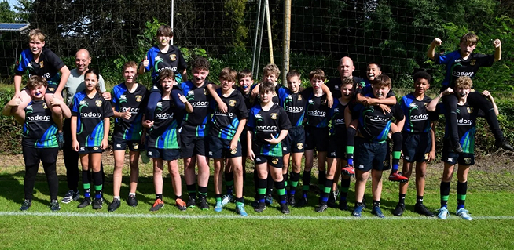

Respect
Bij WRC Te Werve is respect de basis van alles wat we doen. Of het nu op het veld is tegenover teamgenoten,
tegenstanders of scheidsrechters, respect vormt de kern van onze sport. We moedigen een open en eerlijke
speelstijl aan en leren onze spelers om trots te zijn op hun prestaties, maar ook sportief te blijven in
zowel overwinning als verlies. Rugby is een fysieke sport, maar met wederzijds respect blijft het een spel
waar iedereen van kan genieten.

Discipline
Rugby draait om inzet, doorzettingsvermogen en het naleven van de spelregels – en discipline is hierin cruciaal.
Bij WRC Te Werve leren spelers vanaf jonge leeftijd dat discipline niet alleen helpt op het veld, maar ook daarbuiten.
Of het nu gaat om trainen, wedstrijden spelen of samenwerken als team, we verwachten van onze spelers dat ze zich
inzetten, afspraken nakomen en altijd blijven werken aan hun eigen groei.

Kameraatschap
Rugby is een teamsport, en zonder sterke kameraadschap kom je nergens. Bij WRC Te Werve bouwen we aan een hechte clubfamilie
waar iedereen welkom is. Spelers helpen en motiveren elkaar, zowel tijdens trainingen als in wedstrijden. Onze club gaat verder
dan alleen het spel; we organiseren activiteiten en evenementen waar leden en supporters samenkomen, lachen en herinneringen
maken. Hier bij WRC Te Werve ben je nooit alleen – je speelt niet alleen voor jezelf, maar ook voor je team.
